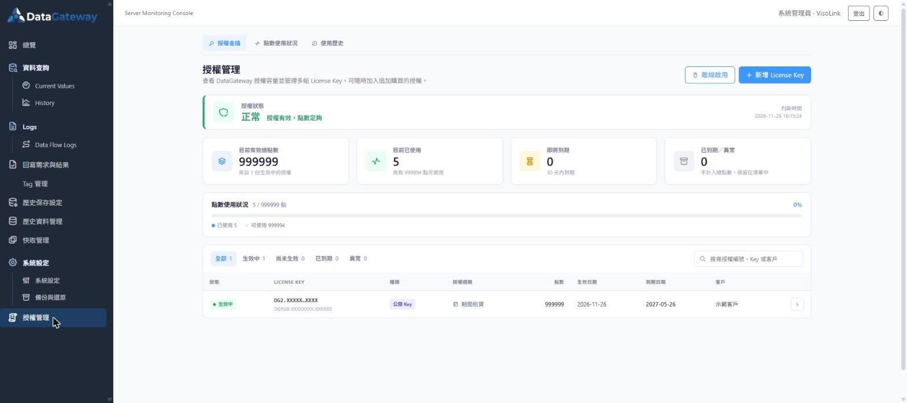

授權管理
查看 DataGateway 授權容量並管理多組 License Key，可隨時加入追加購買的授權。此頁只對管理員開放。
點數規則：每條 Agent 連線未開回寫用 1 點、開回寫用 2 點；保存額度 1 點換 100 個 Tag。停用中的連線照樣占點。
查看授權狀態與 License Key

- 開啟「授權管理」，看「授權狀態」與判斷時間。
- 看目前有效總點數、目前已使用、即將到期（30 天內）、已到期／異常。
- 在清單用「全部／生效中／尚未生效／已到期／異常」或搜尋框（授權編號、Key 或客戶）篩選，按列尾箭頭查看明細。
知道目前可用多少點、哪些授權快到期。
失敗時先查
- 授權狀態不是正常：看狀態說明，常見是點數不足或授權過期。
新增 License Key
- 按「＋ 新增 License Key」。
- 在「在此貼上 License Key」貼上 VisoLink 提供的 DataGateway 公開 Key。
- 按「驗證並新增」。
清單出現新授權，總點數增加；「使用歷史」記錄一筆新增 Key。
失敗時先查
- 驗證失敗：確認 Key 完整複製、沒有多餘空白，且是 DataGateway 的 Key。
離線啟用
- 按「離線啟用」。
- 步驟 1：按「下載 .vlreq」下載啟用請求檔，交給 VisoLink 授權窗口（請求檔不含任何私鑰）。
- 步驟 2：收到授權窗口回傳的 .vllic 檔後，選擇檔案並「匯入並驗證」。
DG 驗證簽章後安裝授權，清單出現新授權。
失敗時先查
- 匯入失敗：確認 .vllic 是針對這台 DG 的請求檔產生的。
查看點數使用狀況

- 切到「點數使用狀況」。
- 用「全部／Agent 連線／保存額度／異常／等待還原」或 Agent 篩選。
- 需要把點數移到其他連線時，按「轉移權杖」依畫面操作。
知道每條連線與保存額度各用了多少點。
「等待還原」的權杖在新 Agent 還原設定備份後才開始收集。
失敗時先查
- 點數不夠新增連線：停用連線仍占點，刪除不用的連線或追加授權。
查看授權使用歷史
- 切到「使用歷史」。
- 用「匯入授權／新增 Key／刪除授權／驗證失敗／狀態變化」篩選事件。
- 看每筆事件的時間、操作者與內容（例如權杖發出、兌換保存額度）。
可追查授權與點數的每次變化。
失敗時先查
- 沒有預期的紀錄：按「重新整理」。